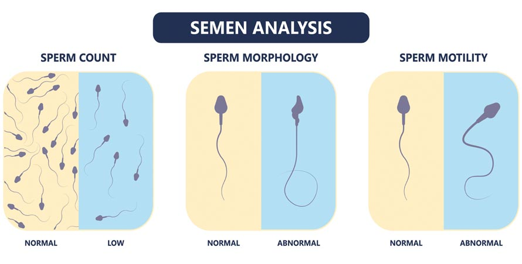
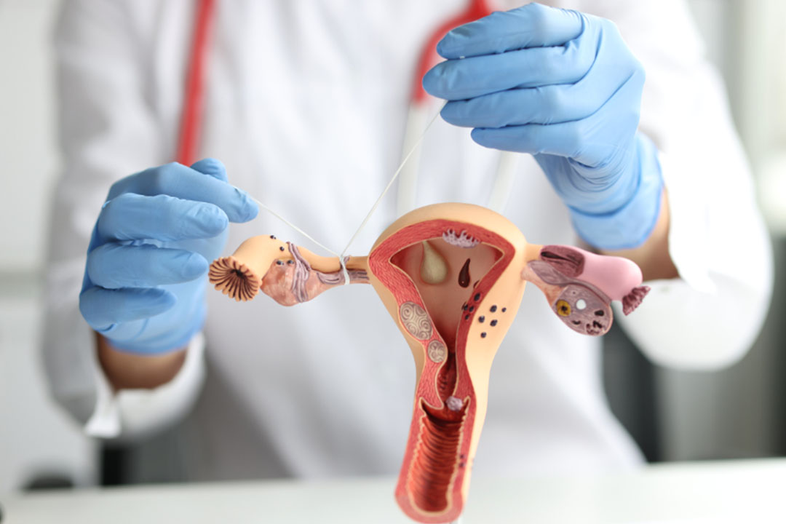
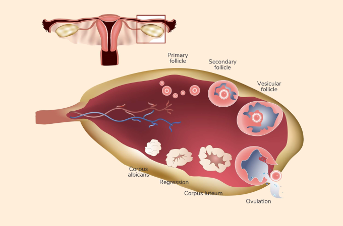
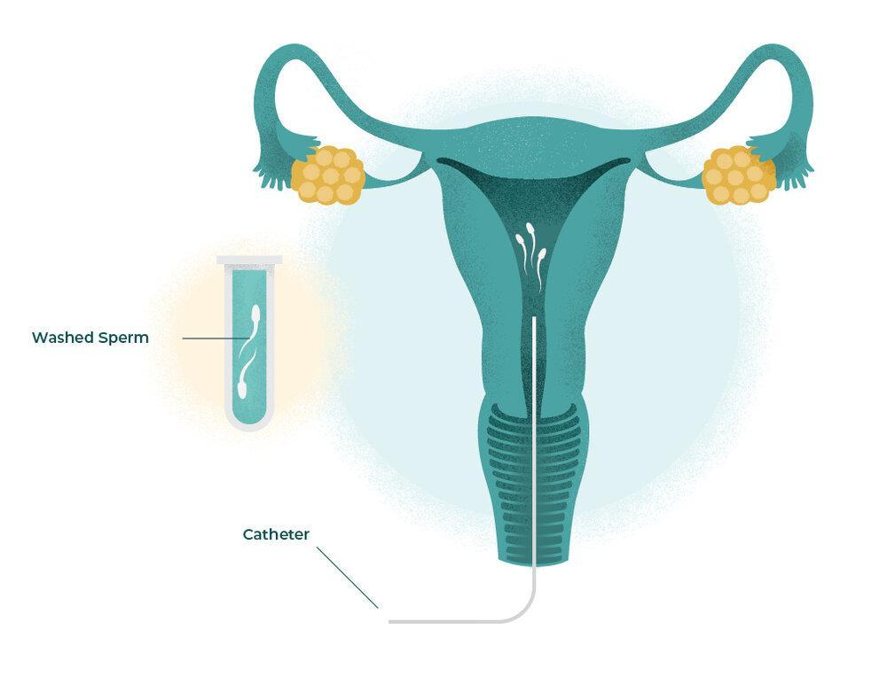
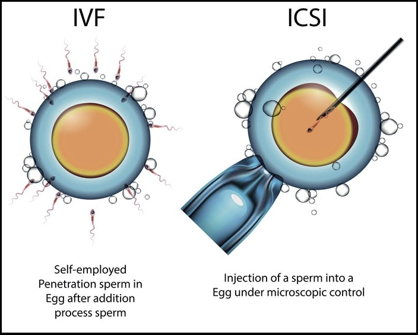
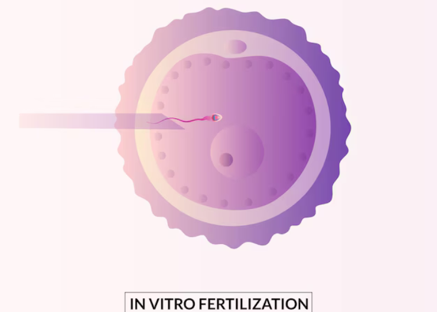
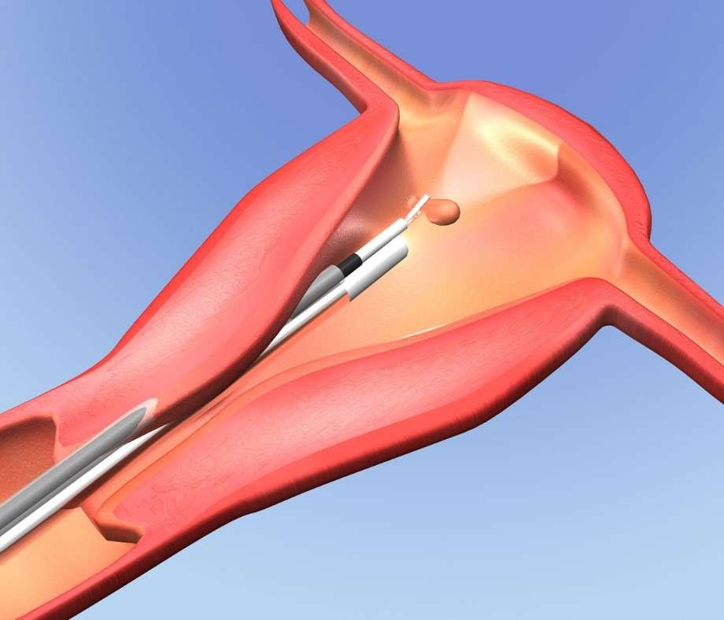
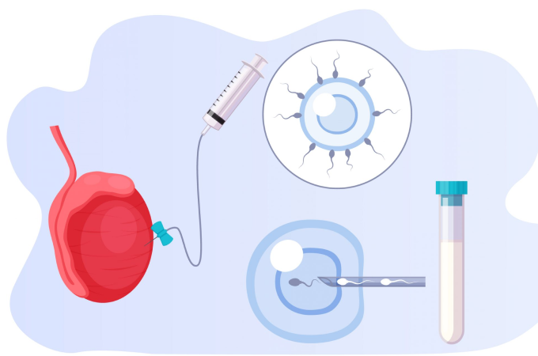
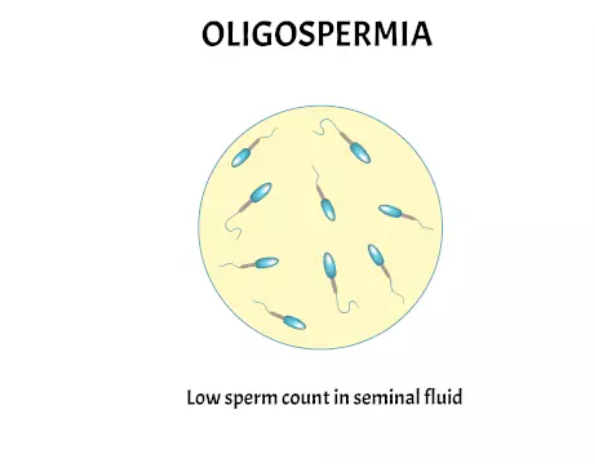

Infertility Assessment
Our specialized care includes:
Couple Workup
A detailed check-up of both partners to understand possible fertility issues. It includes medical history, lifestyle habits, and necessary tests.

Semen Analysis
A test to check sperm count, movement, and shape to see if they are healthy enough for pregnancy. It helps diagnose male fertility problems.
Sonography
An ultrasound scan to check the health of reproductive organs like the uterus and ovaries. It also tracks egg development in women.

Hormonal Testing
Blood tests to check hormone levels that control ovulation and sperm production. It helps identify any hormonal imbalances affecting fertility.

Genetic Testing
A test to check if inherited conditions are affecting fertility. It is useful for couples facing repeated miscarriages or genetic disorders.
Infertility Treatment
Our specialized care includes:

Folliculometry
Ultrasound-based technique used to track the growth and development of ovarian follicles during a woman’s menstrual cycle.

Ovulation Induction
The use of medications to stimulate the ovaries to produce and release eggs in women with irregular or absent ovulation.

IUI (Intrauterine Insemination)
Healthy sperm is placed directly into the uterus around the time of ovulation, increasing the chances of fertilization.

IVF (In Vitro Fertilization)
The process of fertilizing eggs and sperm in a lab, then placing the embryo into the uterus, helping couples conceive naturally.

ICSI
An advanced IVF technique performed under high magnification, where a single sperm is directly injected into an egg.
Fertility Enhancing Endoscopy
Our specialized care includes:

Hysteroscopy
A simple procedure to check the inside of the uterus for any problems that may affect fertility, diagnosing and treating uterine conditions.
Laparoscopy
Minimally invasive surgery to check and treat fertility-related issues inside the abdomen, such as cysts or fibroids.
Endometriosis Surgeries
A procedure to remove abnormal endometrial tissue, reducing discomfort and improving chances of pregnancy.

Ovarian Cyst Removal
Surgery to remove fluid-filled sacs from the ovaries while preserving fertility and restoring normal function.

Ovarian Drilling
A laparoscopic procedure to treat polycystic ovaries, restoring ovulation and improving fertility in women with PCOS.
Advanced Treatment
Our specialized care includes:
.jpg)
Laser Assisted Hatching (LAH)
A technique that helps embryos hatch from their outer shell, improving implantation chances. Recommended for patients with previous failed IVF cycles.
Preimplantation Genetic Testing (PGT)
A screening method that checks embryos for genetic abnormalities before implantation, ensuring the healthiest start.

Sperm DNA Fragmentation Index (DFI) Test
Measures the level of DNA damage in sperm. High fragmentation can affect fertility and increase the risk of miscarriage.
PICSI (Physiological ICSI)
An advanced technique where sperm are selected based on their ability to bind to hyaluronic acid, mimicking natural selection.

Micro TESE
A microsurgical procedure to retrieve sperm directly from testicular tissue in men with severe sperm production issues.
Andrology
Our specialized care includes:

Management of Oligozoospermia
Low sperm count treatment including medications, lifestyle changes, and advanced sperm retrieval techniques.

Surgical Sperm Retrieval
Techniques used to extract sperm directly from the testes or epididymis for assisted reproduction like IVF and ICSI.

Erectile Dysfunction (ED) Treatment
Comprehensive treatment including medical therapy, counseling, and advanced solutions like penile implants.

Ejaculation Disorders
Specialized treatments for premature, delayed, or retrograde ejaculation to improve fertility and intimacy.

Varicocele Treatment
Minimally invasive surgery to treat enlarged veins in the scrotum, improving sperm quality and fertility.
Fertility Preservation
Our specialized care includes:

Egg Freezing
A technique that allows women to store their eggs for future use, ideal for those wishing to delay childbearing for personal or medical reasons.

Sperm Freezing
A widely used method for preserving male fertility, especially for individuals undergoing medical treatments affecting reproduction.

Ovarian Tissue Freezing
A promising preservation technique for individuals who cannot undergo ovarian stimulation, such as young cancer patients.

Embryo Cryopreservation
Freezing and storing fertilized embryos for future use, commonly used in IVF to preserve high-quality embryos.
Fertility Counseling
Professional guidance to help individuals and couples navigate the emotional and physical challenges of reproductive health.
Third-Party Reproduction
Our specialized care includes:

Donor Egg Program
Helps couples conceive using eggs from a healthy screened donor, especially in cases where self-eggs are not available.

Donor Sperm Program
Utilizes sperm from healthy screened donors for cases where the male partner has a complete absence of sperm.

Emotional Support Services
Vital psychological support to help individuals and couples navigate the stress, anxiety, and challenges of their fertility journey.